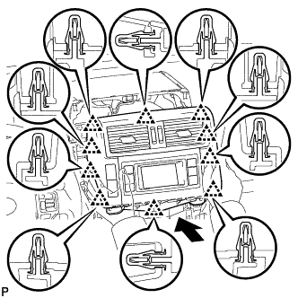

ЗАЩИТНАЯ НАКЛАДКА ПАНЕЛИ ПРИБОРОВ > УСТАНОВКА |
| 1. УСТАНОВИТЕ ЗАЩИТНУЮ НАКЛАДКУ ПАНЕЛИ ПРИБОРОВ В СБОРЕ |
Для моделей с левосторонним рулевым управлением:
Введите в зацепление 2 направляющие, чтобы установить защитную накладку панели приборов.
Установите 2 кронштейна и закрепите их 4 болтами и 2 гайками.
Подсоедините разъемы и введите в зацепление зажимы и захваты.
Вверните 2 болта <G> подушки безопасности пассажира.
Вверните 6 болтов <Е> и заверните гайку <F>.
Установите передний напольный коврик.
| *1 | Болт <E> | *2 | Гайка <F> |
| *3 | Болт <G> | *4 | Направляющая |
| *5 | Кронштейн | - | - |
Для моделей с правосторонним рулевым управлением:
Введите в зацепление 2 направляющие, чтобы установить защитную накладку панели приборов.
Установите 2 кронштейна и закрепите их 4 болтами и 2 гайками.
Подсоедините разъемы и введите в зацепление зажимы и захваты.
Вверните 2 болта <G> подушки безопасности пассажира.
Вверните 6 болтов <Е> и заверните гайку <F>.
Установите передний напольный коврик.
| *1 | Болт <E> | *2 | Гайка <F> |
| *3 | Болт <G> | *4 | Направляющая |
| *5 | Кронштейн | - | - |
| 2. УСТАНОВИТЕ ПЕРЕДНЮЮ НАПОЛЬНУЮ ОПОРУ ДЛЯ НОГИ |
Для моделей с левосторонним рулевым управлением:
Установите переднюю напольную опору для ноги (Нажмите здесь).
Для моделей с правосторонним рулевым управлением:
Установите переднюю напольную опору для ноги (Нажмите здесь).
| 3. УСТАНОВИТЕ ЛЕВОЕ ПЕРЕДНЕЕ СИДЕНЬЕ В СБОРЕ |
для сидений с ручным приводом:
Установите переднее сиденье в сборе (Нажмите здесь).
Для сидений с электроприводом:
Установите переднее сиденье в сборе (Нажмите здесь).
| 4. УСТАНОВИТЕ ПРАВОЕ ПЕРЕДНЕЕ СИДЕНЬЕ В СБОРЕ |
Для сиденья с ручным приводом:
Для сидений с электроприводом:
Для сидений с функцией облегчения посадки "Walk In":
Установите переднее сиденье в сборе (Нажмите здесь).
| 5. УСТАНОВИТЕ ПЕРЕДНИЙ ДИНАМИК № 3 В СБОРЕ |
Введите в зацепление фиксатор и захват, чтобы установить передний динамик № 3.
Подсоедините разъем.
| 6. УСТАНОВИТЕ ПЕРЕДНИЙ ДИНАМИК № 2 В СБОРЕ |
Введите в зацепление фиксатор и захват, чтобы установить передний динамик № 3.
Подсоедините разъем.
| 7. УСТАНОВИТЕ ПАНЕЛЬ ДИНАМИКА ПАНЕЛИ ПРИБОРОВ № 1 |
Введите в зацепление 2 фиксатора, захват и 2 направляющие, чтобы установить панель динамика панели приборов № 1.
| 8. УСТАНОВИТЕ ПАНЕЛЬ ДИНАМИКА ПАНЕЛИ ПРИБОРОВ № 2 |
| 9. УСТАНОВИТЕ РЕГУЛЯТОР ТЕМПЕРАТУРЫ ВОЗДУХА В САЛОНЕ № 1 В СБОРЕ НА ПАНЕЛЬ ПРИБОРОВ |
Введите в зацепление 4 фиксатора, чтобы закрепить воздуховод с дефлектором № 1 панели приборов.
| 10. УСТАНОВИТЕ ДЕФЛЕКТОР № 2 ПАНЕЛИ ПРИБОРОВ В СБОРЕ |
| 11. УСТАНОВИТЕ ПЕРЕДНИЙ ДИНАМИК № 4 В СБОРЕ |
Подсоедините разъем динамика.
Совместите динамик с установочными шпильками на панели приборов и временно установите динамик.
Установите передний динамик № 4 и закрепите его 2 болтами.
| 12. УСТАНОВИТЕ ВЕРХНЮЮ ОТДЕЛОЧНУЮ НАКЛАДКУ ПАНЕЛИ ПРИБОРОВ |
Введите в зацепление 8 фиксаторов и 2 направляющих, чтобы установить верхнюю отделочную накладку панели приборов.
| 13. УСТАНОВИТЕ РАДИОПРИЕМНИК В СБОРЕ (для моделей с аудиосистемой) |
Верхняя сторона:
Установите радиоприемник в сборе (Нажмите здесь).
Нижняя сторона:
Установите радиоприемник в сборе (Нажмите здесь).
| 14. УСТАНОВИТЕ НИЖНЮЮ ЦЕНТРАЛЬНУЮ ОТДЕЛОЧНУЮ НАКЛАДКУ ПАНЕЛИ ПРИБОРОВ В СБОРЕ (для моделей без аудиосистемы) |
Введите в зацепление 3 фиксатора и направляющую, чтобы установить нижнюю центральную отделочную накладку панели приборов.
Вверните 2 болта <Е>.
| 15. УСТАНОВИТЕ ВСПОМОГАТЕЛЬНЫЙ ИНДИКАТОР В СБОРЕ (для моделей с дисплеем, без системы навигации) |
|  |
Подсоедините разъемы.
Вставьте вспомогательный индикатор и введите в зацепление 10 фиксаторов на его обратной стороне.
Установите вспомогательный индикатор и закрепите его 2 болтами.
| 16. УСТАНОВИТЕ ДИСПЛЕЙ МОДУЛЯ СИСТЕМЫ НАВИГАЦИИ И ИНДИКАЦИИ (для моделей с дисплеем, с системой навигации) |
 |
Введите в зацепление 6 захватов, чтобы установить центральный воздуховод с дефлектором панели приборов.
| 17. УСТАНОВИТЕ КРЫШКУ ОТВЕРСТИЯ РАДИОПРИЕМНИКА (для моделей без аудиосистемы) |
Установите открывающуюся крышку тюнера и закрепите ее 4 болтами.
| 18. УСТАНОВИТЕ ЦЕНТРАЛЬНУЮ ОТДЕЛОЧНУЮ НАКЛАДКУ ПАНЕЛИ ПРИБОРОВ В СБОРЕ (для моделей без дисплея) |
Введите в зацепление 10 фиксаторов для установки центральной отделочной накладки панели приборов.
| 19. СНИМИТЕ ЭБУ МУЛЬТИМЕДИЙНОГО ИНТЕРФЕЙСА |
Установите ЭБУ мультимедийного интерфейса и закрепите его 2 гайками.
Подсоедините 3 разъема.
| 20. СНИМИТЕ ЭБУ ПОЛНОГО ПРИВОДА |
Установите ЭБУ полного привода и закрепите его болтом.
Подсоедините 2 разъема.
| 21. УСТАНОВИТЕ ЭБУ ПЕРЕКЛЮЧАТЕЛЯ ПОМОЩИ ПРИ ДВИЖЕНИИ |
Закрепите ЭБУ переключателя помощи при движении болтом.
Подсоедините разъем.
| 22. УСТАНОВИТЕ ДВЕРЦУ ПЕРЧАТОЧНОГО ЯЩИКА В СБОРЕ |
 |
Подсоедините все разъемы.
Установите дверцу перчаточного ящика и введите в зацепление 5 зажима и захват.
Вверните 2 болта <C> и 2 винта <A> или <B>.
| *1 | Болт |
| *2 | Винт |
| 23. УСТАНОВИТЕ ДЕКОРАТИВНЫЙ ЭЛЕМЕНТ ПАНЕЛИ ПРИБОРОВ |
Установите 5 фиксаторов для установки декоративного элемента панели приборов.
| 24. УСТАНОВИТЕ ПРАВУЮ БОКОВУЮ ПАНЕЛЬ ПРИБОРОВ |
Подсоедините разъем.
Введите в зацепление 5 фиксаторов, захват и 3 направляющие, чтобы установить боковую панель приборов.
| 25. УСТАНОВИТЕ ЩИТОК ПРИБОРОВ В СБОРЕ |
Подсоедините разъем.
Установите щиток приборов и закрепите его 4 винтами.
| 26. УСТАНОВИТЕ ОБЛИЦОВКУ ПАНЕЛИ УПРАВЛЕНИЯ В СБОРЕ |
Введите в зацепление 4 захвата, 2 фиксатора и 2 направляющих, чтобы установить отделочную накладку панели приборов.
| 27. УСТАНОВИТЕ ПОДУШКУ БЕЗОПАСНОСТИ № 1 ДЛЯ ЗАЩИТЫ НОГ В СБОРЕ |
 |
Подсоедините разъем.
Установите подушку безопасности в сборе и закрепите ее 4 болтами.
| 28. УСТАНОВИТЕ НИЖНЮЮ ОТДЕЛОЧНУЮ НАКЛАДКУ ПАНЕЛИ ПРИБОРОВ |
Подсоедините все разъемы и все кабели.
Для моделей без подушки безопасности для защиты коленей:
Установите нижнюю отделочную накладку панели приборов и закрепите ее 7 фиксаторами.
Для моделей с подушкой безопасности для защиты коленей:
Установите нижнюю отделочную накладку панели приборов и закрепите ее 14 фиксаторами.
Вверните 2 болта <C>.
Введите в зацепление 2 захвата, чтобы закрыть крышку.
| 29. УСТАНОВИТЕ НИЖНЮЮ ОТДЕЛОЧНУЮ НАКЛАДКУ ПАНЕЛИ ПРИБОРОВ |
Подсоедините все разъемы.
Установите отделочную накладку панели приборов и закрепите ее 4 фиксаторами.
| 30. УСТАНОВИТЕ ОБЛИЦОВКУ ОТДЕЛОЧНОЙ НАКЛАДКИ ПАНЕЛИ ПРИБОРОВ (для моделей с правосторонним рулевым управлением) |
Подсоедините все разъемы.
Установите облицовку отделочной накладки панели приборов и закрепите ее 4 фиксаторами.
| 31. УСТАНОВИТЕ ДЕКОРАТИВНЫЙ ЭЛЕМЕНТ ОБЛИЦОВКИ ПАНЕЛИ УПРАВЛЕНИЯ (для моделей с левосторонним рулевым управлением) |
Установите декоративный элемент отделочной накладки панели приборов и введите в зацепление 3 фиксатора.
| 32. УСТАНОВИТЕ ЛЕВУЮ БОКОВУЮ ПАНЕЛЬ ПРИБОРОВ |
Введите в зацепление 5 фиксаторов, захват и 3 направляющие, чтобы установить боковую панель приборов.
| 33. УСТАНОВИТЕ ОБИВКУ ЛЕВОЙ СТОЙКИ ВЕТРОВОГО СТЕКЛА |
Введите в зацепление 3 направляющих, чтобы установить обивку стойки ветрового стекла.
| 34. УСТАНОВИТЕ ОБИВКУ ПРАВОЙ СТОЙКИ ВЕТРОВОГО СТЕКЛА |
| 35. УСТАНОВИТЕ ВЕРХНИЙ ПОРУЧЕНЬ № 1 |
Введите в зацепление 2 захвата, чтобы установить верхний поручень № 1.
Вверните 2 болта.
| 36. УСТАНОВИТЕ ЛЕВУЮ ПЕРЕДНЮЮ ЗАГЛУШКУ ВЕРХНЕГО ПОРУЧНЯ № 1 |
Введите в зацепление 2 захвата, чтобы установить переднюю заглушку верхнего поручня № 1.
| 37. УСТАНОВИТЕ ПРАВУЮ ПЕРЕДНЮЮ ЗАГЛУШКУ ВЕРХНЕГО ПОРУЧНЯ № 1 |
| 38. УСТАНОВИТЕ УПЛОТНИТЕЛЬ ОБШИВКИ ПРОЕМА ЛЕВОЙ ПЕРЕДНЕЙ ДВЕРИ |
 |
Совместите нанесенную краской отметку на уплотнителе обшивки проема передней двери с отмеченным положением на автомобиле и установите уплотнитель обшивки проема передней двери, как показано на рисунке.
| *1 | Метка, нанесенная краской |
| *2 | Положение метки |
| 39. УСТАНОВИТЕ УПЛОТНИТЕЛЬ ОБШИВКИ ПРОЕМА ПРАВОЙ ПЕРЕДНЕЙ ДВЕРИ |
| 40. УСТАНОВИТЕ БОКОВУЮ ОБЛИЦОВОЧНУЮ НАКЛАДКУ С ЛЕВОЙ СТОРОНЫ КОЖУХА |
Введите в зацепление фиксатор и захват, чтобы установить боковую облицовочную накладку кожуха.
Установите фиксатор.
| 41. УСТАНОВИТЕ БОКОВУЮ ОБЛИЦОВОЧНУЮ НАКЛАДКУ С ПРАВОЙ СТОРОНЫ КОЖУХА |
| 42. УСТАНОВИТЕ ОПОРНУЮ НАКЛАДКУ ЛЕВОЙ ДВЕРИ В СБОРЕ |
Введите в зацепление 4 фиксатора, 10 захватов и 2 направляющие, чтобы установить опорную накладку двери.
| 43. УСТАНОВИТЕ ОПОРНУЮ НАКЛАДКУ ПРАВОЙ ДВЕРИ В СБОРЕ |
| 44. УСТАНОВИТЕ ВЕЩЕВОЙ ЯЩИК В ОБЛИЦОВКЕ ТУННЕЛЯ ПОЛА В СБОРЕ |
Для моделей с автоматической трансмиссией:
Установите вещевой ящик в облицовке туннеля пола в сборе (Нажмите здесь).
Для моделей с механической трансмиссией:
Установите вещевой ящик в облицовке туннеля пола в сборе (Нажмите здесь).
Для моделей с холодильной камерой:
Установите вещевой ящик в облицовке туннеля пола в сборе (Нажмите здесь).
| 45. УСТАНОВИТЕ ПЕРЕКЛЮЧАТЕЛЬ СВЕТА ФАР В СБОРЕ |
Установите переключатель света фар в сборе (Нажмите здесь).
| 46. ПОДСОЕДИНИТЕ ПРОВОД К ОТРИЦАТЕЛЬНОМУ ВЫВОДУ АККУМУЛЯТОРНОЙ БАТАРЕИ |
| 47. ПРОВЕРЬТЕ КОНТРОЛЬНУЮ ЛАМПУ АВАРИЙНОГО СОСТОЯНИЯ SRS |
Проверьте контрольную лампу аварийного состояния SRS (Нажмите здесь).